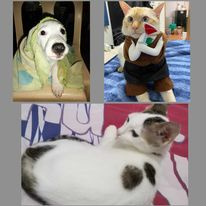

Blog Posts
The Joys and Responsibilities of Pet Ownership
May 22,2024
Owning a pet can be one of the most rewarding experiences in life. Pets provide companionship,
joy, and a sense of purpose, enhancing our daily lives in numerous ways. However, along with
the happiness they bring,pet ownership comes with significant responsibilities that every
prospective pet owner should consider..

Blog Posts
The Feeling of Having Pet In Our Life
May 22,2024
Having pets in our lives brings a unique blend of joy, companionship, and emotional support.
Pets can provide unconditional love, reducing feelings of loneliness and stress.
They often become integral members of the family, offering comfort and a sense of purpose.
The bond with a pet can also encourage a more active lifestyle and foster social connections,
as pet owners often meet and bond with others through their animals. Overall, pets enrich our lives with their
loyalty, playful spirit, and the simple pleasure of their company.